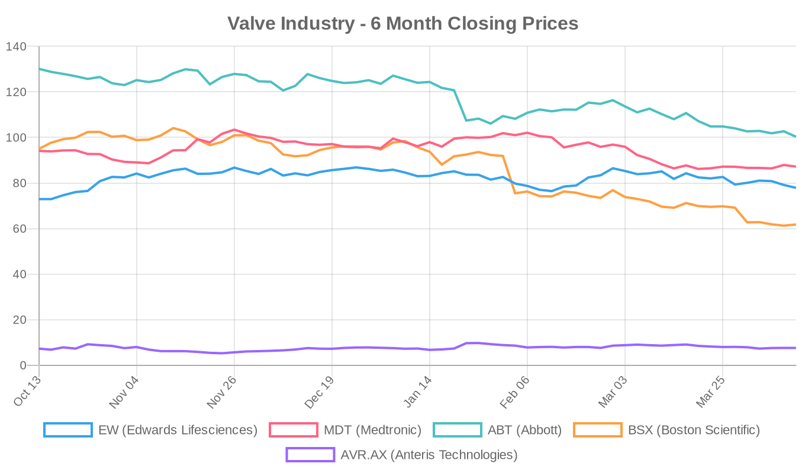
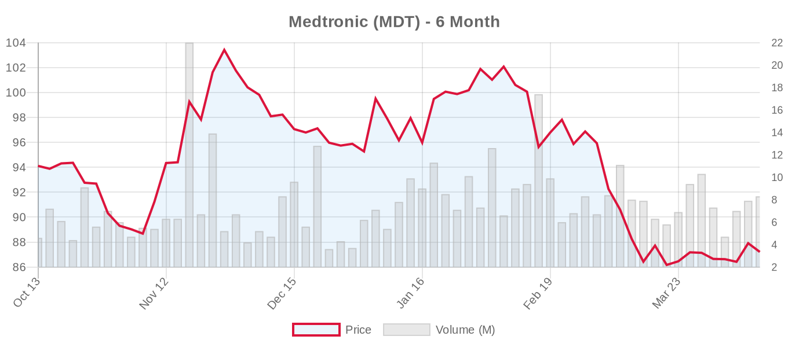

|
||||||||||
|
April 12, 2026 By E. Nolan Beckett |
||||||||||
|
||||||||||
Executive SummaryToday's structural heart news centers on the expanding frontiers of valve therapy — from extremely large aortic annuli to failing surgical bioprostheses and the tricuspid space. Two JACC Case Reports describe novel transcatheter solutions for patients previously considered untreatable: a Trilogy valve deployed in a degenerated Freestyle graft with a flail cusp, and a Myval 35-mm valve implanted in the largest reported aortic annulus (>1,000 mm²). Meanwhile, a community-practice registry of nearly 6,700 TAVR patients finds no difference in stroke risk between balloon-expandable and self-expanding valves — reassuring data suggesting patient factors, not device type, drive post-TAVR stroke. And in the tricuspid space, VDYNE has secured an FDA IDE for its pivotal TRIVITA trial, setting up a head-to-head comparison against Edwards' EVOQUE system. For the clinical audience: today's publications underscore a recurring theme — we are increasingly pushing transcatheter technologies into anatomic and clinical territories where randomized evidence is thin. The Trilogy-in-Freestyle and Myval-in-massive-annulus cases are technically impressive but represent single-patient experiences that should not be mistaken for validated approaches. The stroke analysis from CommonSpirit hospitals, published in JACC: Advances, offers more substantive evidence but is limited by its observational design and modest SEV representation (18%). The VDYNE IDE approval is perhaps the day's most strategically significant development — it signals that the tricuspid replacement market is about to get its first randomized comparator trial between two TTVR platforms, a space where the ESC 2025 guidelines have already moved ahead of the evidence base with a Class IIa recommendation for transcatheter therapy. Today's Key Findings
Aortic Valve (TAVR/TAVI)Stroke Risk After TAVR: BEV vs. SEV in Community Practice[NOTABLE] Kumar et al. present a real-world analysis of 6,663 TAVR patients across CommonSpirit Health hospitals (January 2021–February 2023) using STS/ACC TVT Registry data. Eighty-seven patients (1.3%) experienced stroke within one year. After inverse probability of treatment weighting, there was no significant difference in stroke-free survival between balloon-expandable (n=5,445) and self-expanding valves (n=1,218; log-rank P=0.448; aHR 1.54, 95% CI 0.79–2.68). The independent predictors of stroke were clinical, not device-related: age, lower BMI, prior stroke, STS risk score, and alternative (non-transfemoral) access. This aligns with meta-analytic data and is reassuring for clinicians making valve selection decisions. However, several caveats deserve note: the SEV cohort was substantially smaller (18.3%), had higher STS scores, and included more women — raising questions about residual confounding despite IPTW adjustment. The overall 1.3% stroke rate is consistent with contemporary benchmarks, though community-hospital outcomes may differ from high-volume academic centers where most RCT data originate. The study also cannot address cerebral embolic protection device use, anticoagulation protocols, or subclinical stroke detected by neuroimaging. Trilogy Valve in Degenerated Freestyle Graft With Flail CuspAl-Shaibi et al. report what appears to be the first use of the JenaValve Trilogy (27-mm) for TAVI in a Freestyle stentless bioprosthesis with a flail left coronary cusp. The Trilogy's locator-based deployment mechanism, designed for native aortic regurgitation, theoretically offers advantages in this scenario — clip-on fixation to native/bioprosthetic leaflets may provide stability where a flail cusp could compromise sealing with conventional TAVR platforms. The procedural outcome was excellent. Editorial note: This is a single case report and should be interpreted accordingly. Freestyle valve-in-valve procedures are technically challenging, and while the Trilogy's mechanism is conceptually appealing here, we have no comparative data or even a case series. JenaValve remains a private company with limited penetration; the Trilogy received CE mark for native AR and is not yet FDA-approved. Filing this under "interesting proof-of-concept" rather than "practice guidance." Myval 35-mm in Massive Aortic Annulus (1,040 mm²)Al-Shaibi et al. (same group) describe TAVI in the largest reported aortic annulus using Meril Life Sciences' Myval 35-mm balloon-expandable valve. Current commercially available TAVR platforms top out at 29 mm (SAPIEN 3 Ultra, Evolut FX+), requiring off-label balloon overfilling for annuli exceeding ~700 mm² — a technique associated with paravalvular leak, valve embolization, and leaflet damage. The Myval 35-mm, available in some markets following the LANDMARK trial's demonstration of noninferiority to SAPIEN/Evolut, addresses this gap. Editorial note: Meril is a private Indian company and the Myval is not FDA-approved, limiting relevance for US practice. But the anatomic problem is real: patients with massive annuli have historically been left with suboptimal options. This case adds to a growing body of evidence — including the LANDMARK trial — that the Myval platform deserves attention, particularly at the extremes of annular sizing. CT Planning for Redo-TAVI: Structured ApproachVaz et al. publish a pictorial essay in Clinical Radiology proposing a step-by-step CT-based approach and structured reporting template for redo-TAVI (TAV-in-TAV) planning. The review covers index valve characterization, failure mechanism identification, commissural and coronary alignment assessment, internal valve measurements, and neoskirt plane definition. This is timely: as TAVI expands to younger, lower-risk patients per ESC 2025 guidelines (Class I for ≥70 with tricuspid AV), the volume of late transcatheter valve failures will inevitably grow. Current data show redo-TAVI accounts for 84% of reinterventions and occurs at 1.7% at 8 years — but these numbers will compound as the denominator grows. The ESC 2025 guidelines explicitly emphasize lifetime management planning at the index procedure, including future valve-in-valve feasibility and coronary obstruction risk. This publication provides practical infrastructure for that planning. Tricuspid Valve (TriClip, TTVR)VDYNE Secures FDA IDE for TRIVITA Pivotal Trial[NOTABLE] VDYNE has received FDA Investigational Device Exemption to initiate the TRIVITA pivotal trial — a 730-patient randomized study comparing VDYNE's transcatheter tricuspid valve replacement system against Edwards' EVOQUE system in patients with symptomatic severe TR. This is notable for several reasons:
Editorial note: The ESC 2025 guidelines gave transcatheter tricuspid valve treatment a Class IIa, LOE A recommendation based on TRILUMINATE (TEER), Tri.Fr (TEER), and TRISCEND II (TTVR) — all compared against medical therapy. But the ACC/AHA 2020 guidelines didn't address transcatheter TR therapy at all, and we still lack long-term durability data for any transcatheter tricuspid platform. The TRIVITA trial asking "which TTVR?" before we've fully answered "TTVR at all?" reflects a market racing ahead of guideline consolidation. Meanwhile, the elephant in the room remains patient selection: the too-late-referral problem means many candidates present with advanced RV dysfunction, where even the best device may not change trajectory. Robustly comparing two replacement platforms is progress — but we should not lose sight of the unanswered questions about when, and for whom, any transcatheter tricuspid intervention is appropriate. PVL After TTVR Linked to Worse SurvivalCardiovascular Business reports that paravalvular leak following transcatheter tricuspid valve replacement is associated with significantly lower survival rates and diminished clinical benefit. The details are limited from the news summary, but this finding echoes the well-established relationship between PVL and outcomes in TAVR and underscores that procedural success metrics in TTVR must include rigorous assessment of paravalvular sealing. The complex, non-circular geometry of the tricuspid annulus makes PVL a particular challenge for replacement devices — and a potential differentiator between platforms as the TRIVITA and other trials generate comparative data. Tricuspid Valve — Robotic TTVRA new first-in-human study (NCT07516145) out of Prince of Wales Hospital in Hong Kong is recruiting 10 patients for robotic transjugular transcatheter tricuspid valve replacement. While enrollment is tiny and details are sparse, robotic-assisted delivery could theoretically improve precision in the anatomically challenging right heart. Worth monitoring as an early-stage technical development. Device & TechnologyPost-TAVR Bleeding and Reprocessed Catheter RecallCardiovascular Business covers key details on post-TAVR bleeding complications and a reprocessed catheter recall. Bleeding remains a major driver of morbidity after TAVR, and anticoagulation management continues to evolve — particularly as the patient population expands to younger, lower-risk individuals where bleeding events carry outsized long-term consequence. The catheter recall, while not TAVR-specific, is a reminder that device reprocessing carries inherent quality control risks in the cath lab environment. Industry & MarketBoston Scientific: Innovation Edge Under ScrutinyAD HOC NEWS analyzes whether Boston Scientific's medtech innovation edge — spanning electrophysiology, interventional cardiology, and structural heart — is sufficient to drive the stock through current market headwinds. BSX has been the hardest hit among major valve players over the past six months (-34.9%), though it remains a Strong Buy consensus. The piece comes ahead of BSX's April 22 earnings report. Financial AnalysisThe structural heart device sector is navigating a turbulent stretch. Abbott has hit a fresh 52-week low at $99.34, down nearly 23% over six months — a remarkable decline for a company with dominant positions across MitraClip, TriClip, and the NaviTor TAVR program. Earnings next Wednesday (April 16) will be closely watched for commentary on structural heart procedure volumes and any impact from evolving reimbursement dynamics. The tariff and macro environment has weighed on all medtech names, but Abbott's decline is outsized, suggesting market concern beyond sector rotation. Edwards Lifesciences reports April 22 with consensus expecting $0.73 EPS on $1.60B revenue. The stock has held up better (+6.7% over six months) but slipped 1.6% today. Edwards faces a pivotal period: the PASCAL CLASP IID/IIF trial (NCT03706833) is active and not recruiting, the TRISCEND II trial continues follow-up on EVOQUE, and the TRIVITA trial positions EVOQUE as the reference standard in TTVR — a validation of market position even as a competitive threat. The ESC 2025 guideline expansion of TAVI to age ≥70 is a secular tailwind for SAPIEN volumes, but Edwards must also demonstrate PASCAL differentiation vs. MitraClip and defend against the Myval challenge in emerging markets. Boston Scientific's nearly 35% decline over six months — despite a Strong Buy consensus with targets averaging $98.72 — suggests a significant disconnect between analyst sentiment and market pricing. With forward P/E at 15.8× (vs. Edwards at 23.5×), BSX is pricing in either margin compression or growth deceleration. Earnings April 22 will be a key catalyst. Medtronic continues its slow grind lower (-7.3% over six months), reflecting the broader conglomerate discount. The Evolut FX+ platform and Intrepid TMVR pipeline (NCT03242642, recruiting) represent upside catalysts, but MDT's structural heart business remains one division among many. Earnings aren't until May 20. Anteris Technologies, the Australian small-cap developing the DurAVR single-piece tissue TAVR valve, ticked up 1.1% on minimal volume. The company's pivotal trial (NCT07194265) is actively recruiting with a 1,650-patient target — an ambitious enrollment for a small company. The stock trades at a fraction of its 52-week high ($7.59 vs. $9.79), and the single analyst covering the name has a $13.00 target — but this is a pre-revenue, cash-burning venture play where clinical trial execution is existential. Valve Industry Stocks Edwards Lifesciences (EW)
Medtronic (MDT)
Abbott Laboratories (ABT)
Boston Scientific (BSX)
Anteris Technologies (AVR.AX)
Private Companies of Note: JenaValve Technology (Trilogy valve, featured in today's Freestyle graft case), Meril Life Sciences (Myval, featured in the massive annulus case), and J Valve Technology are all private and not publicly traded. JenaValve's Trilogy is notable for its AR-specific mechanism; Meril's expanded sizing with the 35-mm Myval addresses an unmet need at the extremes of annular anatomy. Market Outlook: The valve sector faces a pivotal two weeks. Abbott reports April 16, followed by Edwards and Boston Scientific on April 22. Structural heart revenue growth will be the key metric across all three. The ESC 2025 guideline expansion of TAVI eligibility and the Class I upgrade for TEER in secondary MR represent secular tailwinds — but macro headwinds, tariff uncertainty, and the growing scrutiny of healthcare spending are creating a challenging investment environment. The significant analyst-to-price disconnects (especially BSX at 60% upside to consensus) suggest either an opportunity or a market repricing that analysts have yet to acknowledge. Clinical Trial UpdatesAortic Valve Trials
Mitral Valve — Repair Trials
Mitral Valve — Replacement Trials
Tricuspid Valve — Repair Trials
Tricuspid Valve — Replacement Trials
Other Relevant Trials
Social & Conference HighlightsNo major conference presentations or social media highlights today. The structural heart community is likely gearing up for several earnings calls in the next two weeks (ABT April 16, EW and BSX April 22, MDT May 20) that will provide the most granular insight into real-world procedure volumes, geographic growth patterns, and pipeline timelines. Looking Ahead: Abbott earnings on April 16 will provide the first read on Q1 structural heart volumes across MitraClip, TriClip, and the broader portfolio. Meanwhile, the VDYNE IDE approval is the clearest signal yet that the tricuspid replacement space is maturing from proof-of-concept to competitive differentiation — though we'd caution that the field's enthusiasm for device-vs.-device comparisons shouldn't outpace the need for longer-term outcomes data and clearer patient selection criteria. As always, the right question isn't just "which device?" but "which patient, and when?" — E. Nolan Beckett, The Valve Wire |
||||||||||
|
|
||||||||||
|
||||||||||
|